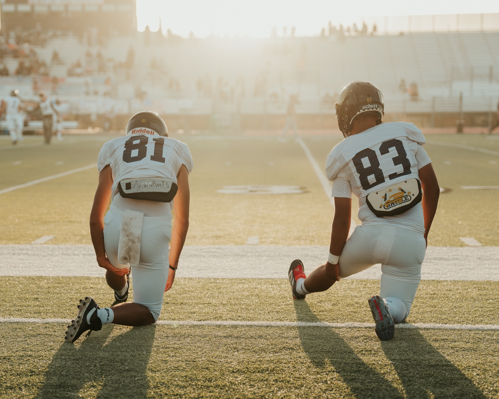
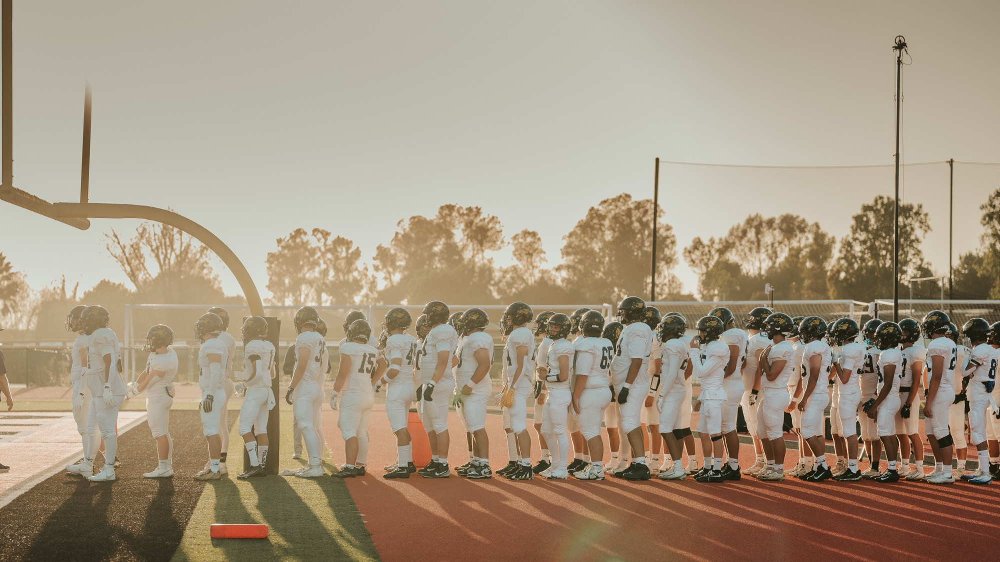
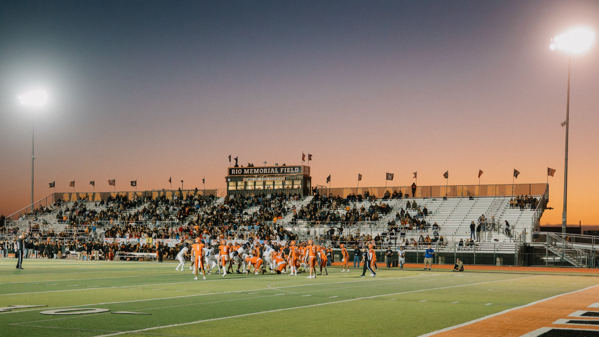
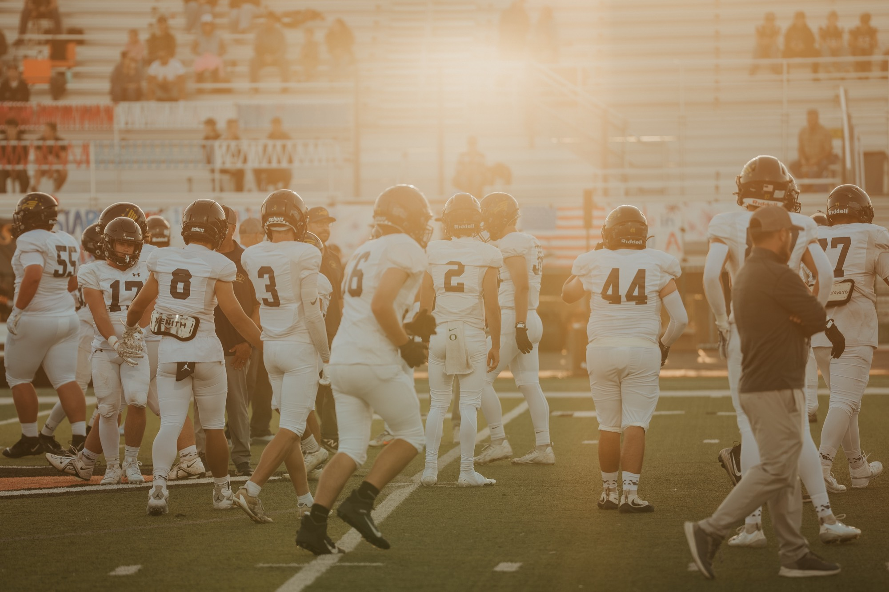
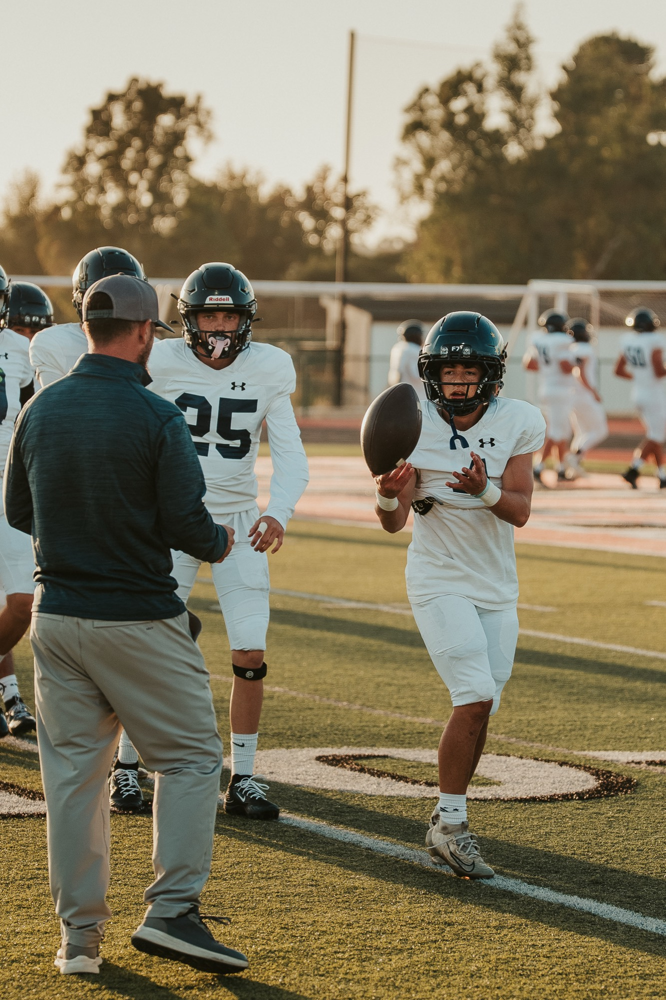
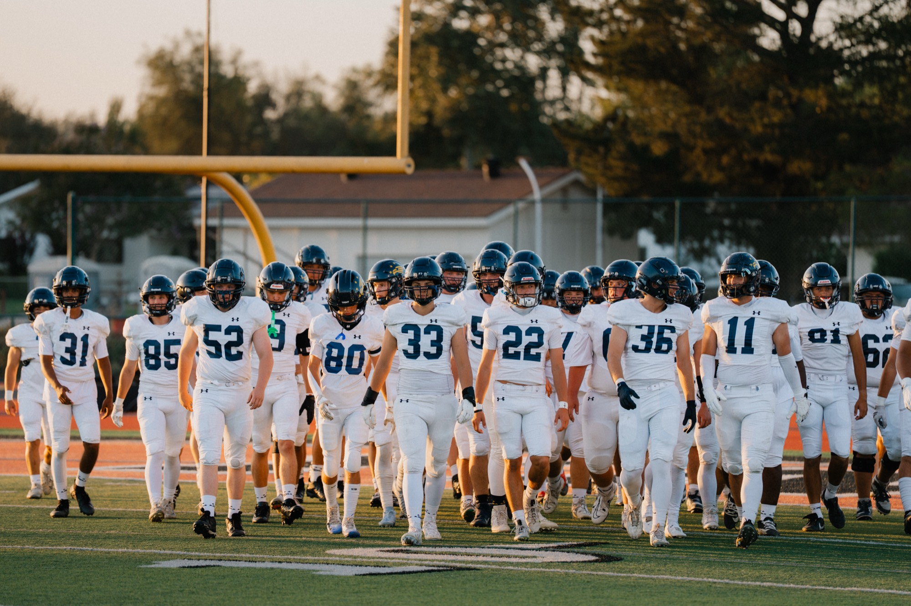
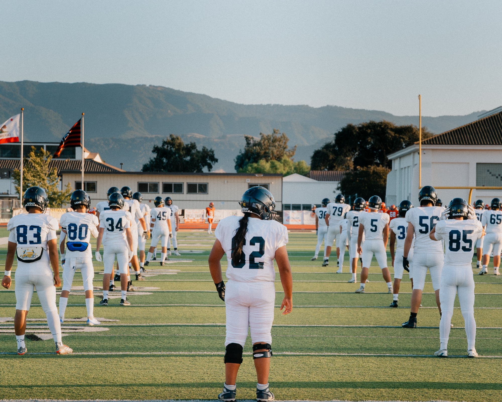
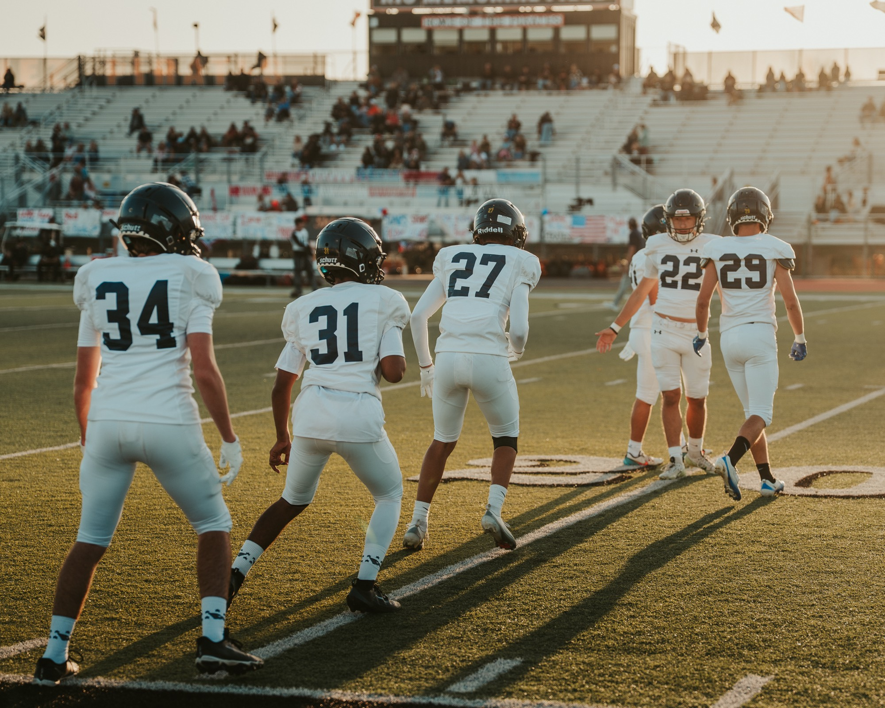
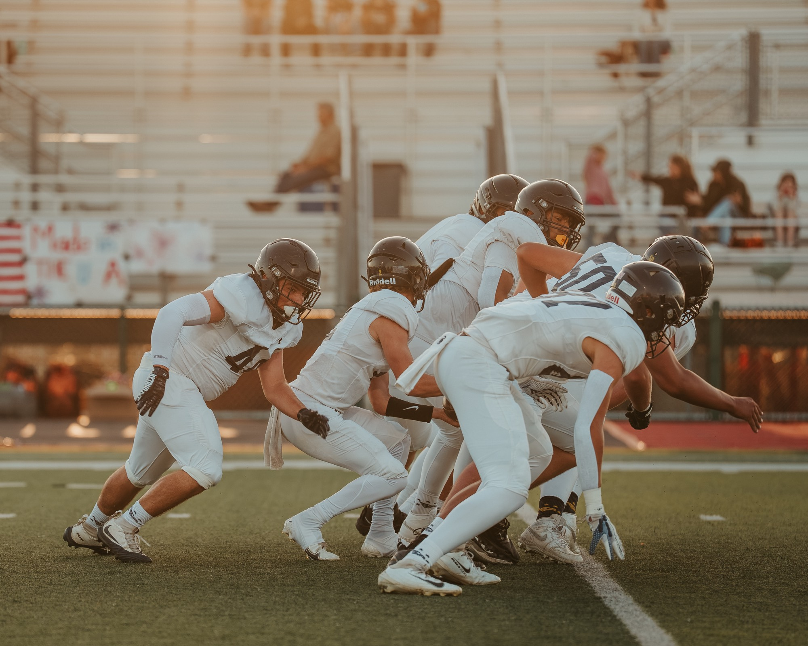

Before the crowd gets loud and before the scoreboard matters, there is a rhythm to a football team. The warmups, the lines, the conversations, coaches calling out directions and players moving from one drill to the next.

It wasn't perfect. Coaches still had to yell a correction. Players occasionally ended up a step out of place. A drill would reset and they'd go again. But underneath all of that, you could see the repetition beginning to pay off. There was a familiarity to the way they worked together, the kind that comes from spending hours doing the same things alongside the same people.
As the sun dropped behind the hills and the stadium lights took over, that connection became even more apparent.


One moment in particular stayed with me. Near the goal line, one of the defensive linemen got the ball and scored. I don't know the story behind the play. Maybe they'd worked on it for weeks, or maybe they hadn't. All I know is what I saw from the sideline.
The sideline erupted.
The defensive lineman's touchdown, the moment the sideline erupted.
Players rushed toward their teammate, arms went into the air, and for a few seconds there seemed to be as much joy from the players watching as there was from those on the field. It was genuine, and from an outsider's perspective, the moment wasn't lost on me. There is something revealing about watching people celebrate when the moment belongs to somebody else.

I noticed it again later in the second half, when a different player got his moment. The reaction from the sideline didn't change one bit — still watching, still encouraging, still celebrating like it was the biggest play of the night.
Another player gets his moment in the second half.
Football gives you plenty of obvious things to photograph: catches, tackles, touchdowns and collisions beneath the stadium lights. But increasingly, I find myself looking just outside the play. A coach making a correction during warmups. Players gathering around one another. A hand on a shoulder. An entire sideline losing its mind because a teammate just got his moment.

I've noticed that same sense of connection while photographing other Arroyo Grande teams. It's not always flashy, and sometimes it's barely noticeable unless you're looking for it. But the bonds are there.
Maybe that's what stayed with me most from Friday night. This wasn't a picture of perfection. There were mistakes, corrections and things that still needed work. That's sport. But there was also coordination, trust and a genuine happiness in seeing someone beside you succeed.
Friday night was on somebody else's field, surrounded by a different crowd and under different lights. But from my place on the sideline, one thing was pretty easy to see.
This is a team.




Living Stories.
Ngā kōrero ora.
— Simon Kurth | TWM Stories
Follow the season as it unfolds — more from Friday Night Stories →
A Note for TWM Senior Clients
TWM senior clients receive complimentary access to game photographs I happen to capture of them throughout their senior year.
For some families, the story continues beyond the senior session — through games, performances, graduation, and the other moments that make up this last year of high school. The Senior Memory Experience →
About TWM Stories
TWM Stories is the Central Coast's story-driven photo and film experience, based in Arroyo Grande and serving families across San Luis Obispo, Pismo Beach, Grover Beach, Nipomo, and surrounding 805 communities. Ngā Kōrero Ora — Living Stories. Every session is built around capturing something real rather than manufacturing something perfect.